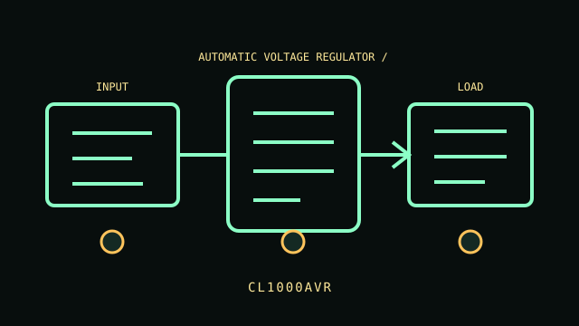

[ AUTOMATIC VOLTAGE REGULATOR / LINE CONDITIONER // IDENTIFIED MODEL ]
CL1000AVR
1000 VA / 500 W, 120 V automatic voltage regulator; no battery. Eight NEMA 5-15R outputs. This record describes the named regional model only. Variants and accessories must be matched against the complete product label and manufacturer documentation.

ARCHIVAL IDENTIFICATION: Preserve the complete SKU, region, serial/date code, hardware/firmware revision, installed options and observed condition. Similar names do not establish electrical equivalence.
Exact model specifications
| Catalog category / topology | Line conditioners — Automatic voltage regulator / line conditioner. |
|---|---|
| Electrical ratings | 1000 VA / 500 W, 120 V automatic voltage regulator; no battery. |
| Receptacles / connectors | Eight NEMA 5-15R outputs. |
| Battery / replacement / hot-swap | Not applicable: this model has no battery or stored-energy backup. LED status only; no network/runtime. AVR works only in specified input range and does not bridge outages; stay within 500 W and outlet limits. |
| Runtime / operating conditions | No stored runtime. The product supplies only its stated surge suppression, metering, regulation, distribution or source-transfer function; continuity depends on upstream AC and connected equipment. |
| Network / monitoring interface | Local voltage/status indicators where fitted; no network monitoring or outage support. |
| Electrical compatibility | LED status only; no network/runtime. AVR works only in specified input range and does not bridge outages; stay within 500 W and outlet limits. |
| Warnings / revision controls | LED status only; no network/runtime. AVR works only in specified input range and does not bridge outages; stay within 500 W and outlet limits. Verify complete suffix, electrical ratings, connectors, firmware/manual revision and regional certification against the actual nameplate before connecting equipment. |
Service and archival notes
- Photograph the nameplate, inlet/outlet map, serial/date code, status indicators and accessories; record load, input, environment and test date separately from manufacturer ratings.
- Do not confuse distribution/regulation/surge suppression/metering or transfer with battery backup; this model has no stored runtime.
- Never open energized mains equipment. Do not energize cracked enclosures, damaged cords, overheated connectors, compromised grounding or swollen/leaking batteries.
- LED status only; no network/runtime. AVR works only in specified input range and does not bridge outages; stay within 500 W and outlet limits.
Manufacturer sources and manual
- CyberPower manufacturer product search — CL1000AVRFind the manufacturer’s specification sheet for the exact named model and regional SKU.
- CyberPower manuals / support libraryUse the user guide, service and safety instructions matching the label and revision. This static archive does not replace manufacturer documentation.